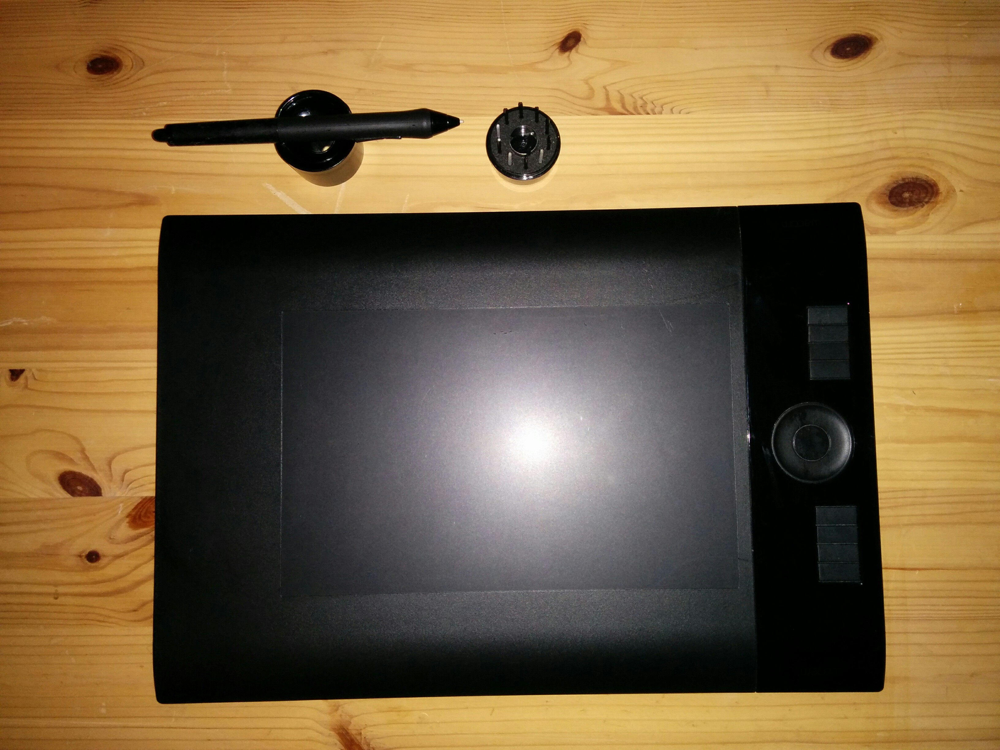

Wacom Intous 4 size medium (A4)
Comes with 11 different nibs, only 2 of which have been used (and ony gently at that). £100 ono. More info (user manual)
selling some stuff for pickup in Hackney, London or pay $$$ for shipping. Contact me on twitter if you want anything.
Comes with 11 different nibs, only 2 of which have been used (and ony gently at that). £100 ono. More info (user manual)

I bought this to make cool paper electronics lessons for Code Club, but since that is not happening anymore get without having to wait for postage from the US. £120 ono. More info

Some marks/discolouring on the covers, but mint condition inside. £20 ono more info
In white, aubergine, lilac and grey. Not used. Plates are white. £40 ono. More info


Studio XPS 13. 13.3 inch screen. 2.3Ghz 4.0GB RAM 320GB HDD. From 2011. Has scratches on the outside from being stored in a box for 2 years. Basically I got a mac for work just after getting this one so hardly used it :/ Dual boot Windows 7 and Ubuntu. Needs new battery but works fine plugged in. New batteries are about USD 30 and easy to replace (slots in)More info. £ 100 ono.
Red, portable. Very little use. More info here. £90.
Also selling a bunch of books